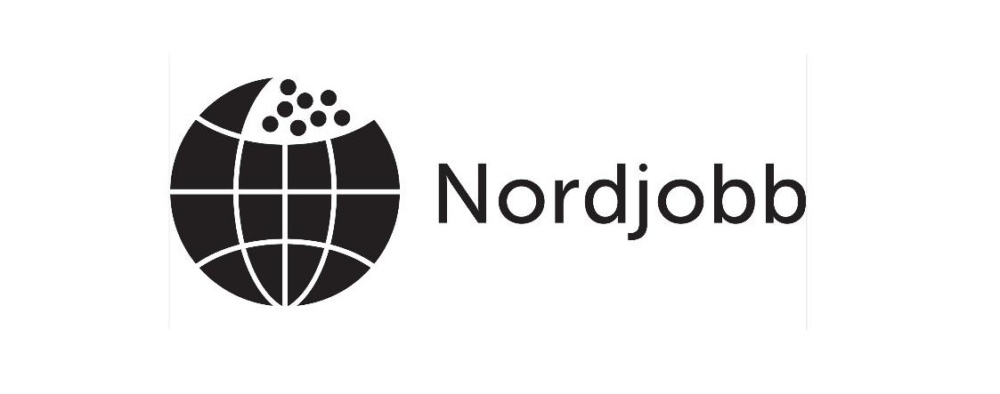

Pelin tarkoitus on tuottaa hyvää mieltä.
Nora Dahlbacka, Nordjobblähettiläs 2025-2026
Spelets syfte är att sprida glädje och gott humör.
Nora Dahlbacka, Nordjobbambassadör 2025-2026
Spillets formål er at sprede godt humør.
Nora Dahlbacka, Nordjobbambassadør 2025-2026
Spillets formål er å spre godt humør.
Nora Dahlbacka, Nordjobbambassadør 2025-2026
Tilgangur leiksins er að koma fólki í gott skap.
Nora Dahlbacka, Nordjobbsendiherra 2025-2026
Endamálið við spælinum er at skapa gott lag.
Nora Dahlbacka, Norðjobbambassadørur 2025-2026